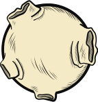

La voz de las niñas, niños y adolescentes no suelen ser escuchadas y menos a nivel municipal a pesar de la existencia de espacios de participación específicos para ello, como las Mesas Municipales de Participación de Niñaz, Niños y Adolescentes. Estos espacios a veces son más una fachada para que las administraciones puedan demostrar su compromiso con la participación ciudadana que un espacio de intercambio y de escucha. A veces también, a pesar de la voluntad política de promover estos espacios, las niñas, niños y adolescentes no tienen las suficientes información y herramientas para participar.
Para lograr que estos espacios se hagan más efectivos, Fundación PLAN ha propuesto en el marco del proyecto Usa tu poder para construir Paz la estrategia Siguiéndole la pista a nuestros derechos, con 100 niños, niñas y adolescentes en 4 territorios: Cartagena (Bolívar), Tumaco (Nariño), Quibdó (Chocó) y Buenos Aires (Cauca).
Esta estrategia cuenta con 4 fases:
Formación, Diseño e implementación de iniciativas de monitoreo de derechos, Movilización ciudadana, Diálogos con gobernantes. Tiene como fin hacerle seguimiento a los compromisos del Estado para la garantía de derechos y pretende integrar tres niveles de acción e incidencia que se nutren y retroalimentan constantemente: el nivel territorial donde se encuentran los niños, niñas y adolescentes, el nivel nacional donde se realizan las acciones de la Alianza por la Niñez y el nivel regional, desde donde promueven espacios y redes para la defensa de los derechos de la niñez y la adolescencia. El seguimiento y monitoreo se realizó a: i) los compromisos del Estado para la garantía de derechos identificados en las recomendaciones del CDN, ii) los aspectos relevantes de infancia y adolescencia planteados en los Planes de Desarrollo Territoriales, iii) los Objetivos de Desarrollo Sostenible, y iv) los Acuerdos de Paz.
Se destaca así que, del total de niñas, niños y adolescentes formados en el proceso, el 61% (84NNA) están participando en las Mesas Municipales de Participación, Plataformas Juveniles, Consejos de Infancia y otros espacios de incidencia. Así mismo, este proceso de monitoreo de derechos ha permitido darle dinámica a las Mesas Municipales de Participación de Tumaco, Buenos Aires y Quibdó, y consolidar el Consejo Distrital de Infancia y Adolescencia de Cartagena, espacios a los cuales se les ha brindado asistencia técnica.


El ejercicio de control social supone tener conocimientos técnicos sobre los diferentes temas de la gestión pública. También, conocimientos repecto a las técnicas de ciencias sociales que permiten recolectar la información necesaria al seguimiento de esta gestión: aplicación de encuestas y análisis de la información, realización de entrevistas, redacción de informes.
Leer más
En 2015, 2016 y 2017, las Comisiones Ciudadanas elaboraron un informe anual de seguimiento ciudadano a la gestión de cada administración municipal en cuanto al cumplimiento a los compromisos adquiridos con la ciudadanía en materia de infancia, adolescencia, juventud, mujeres y temas claves del Acuerdo de Paz como desarrollo rural y reintegración.
Leer más
El ejercicio de control social supone tener conocimientos técnicos sobre los diferentes temas de la gestión pública. También, conocimientos repecto a las técnicas de ciencias sociales que permiten recolectar la información necesaria al seguimiento de esta gestión: aplicación de encuestas y análisis de la información, realización de entrevistas, redacción de informes.
Leer más
En 2015, 2016 y 2017, las Comisiones Ciudadanas elaboraron un informe anual de seguimiento ciudadano a la gestión de cada administración municipal en cuanto al cumplimiento a los compromisos adquiridos con la ciudadanía en materia de infancia, adolescencia, juventud, mujeres y temas claves del Acuerdo de Paz como desarrollo rural y reintegración.
Leer más